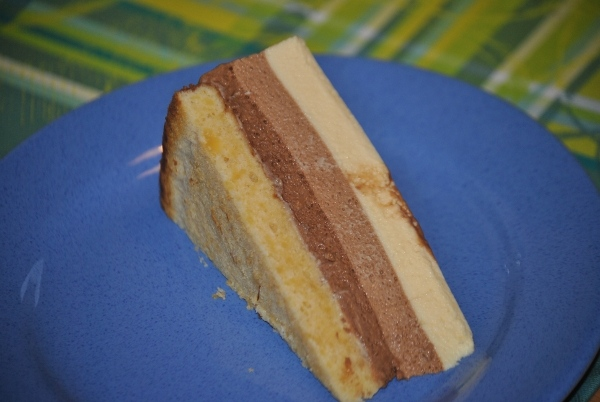

Torte Tricolore

- Zubereitung: 2 Stunden
- Backzeit: 12 Minuten
- Kühlzeit: 100 Minuten im Tiefkühlfach und mind. 2 Stunden im Kühlschrank
- Für einen Tortenring (24 cm Durchmesser)
Zutaten
- 250 g weiße Schokolade
- 75 g Butter
- 5 Eier (Größe M)
- 50 Zucker
- 75 g Mehl
- 50 g gemahlene Mandeln
- 650 g Sahne
- 100 g Zartbitter-Schokolade
- 8 Blatt Gelatine
- 100 g Vollmilch-Schokolade
- 2 Eigelbe
- 2 Passionsfrüchte
- 150 ml ungesüßter Maracujasaft
Zubereitung
- Den Backofen auf 180° Celsius vorheizen und das Backblech mit Papier belegen. Den Tortenring darauf setzen. Für den Boden 100 g weiße Schokolade schmelzen. Die Butter schaumig schlagen. 3 Eier trennen. Die Eigelbe und die flüssige Schokolade
unter die Butter rühren. Die Eiweiße mit dem Zucker steif schlagen und mit Mehl und Mandeln unter die Schokomasse heben. Den Teig im Tortenring glatt streichen und im heißen Ofen (Mitte) ca. 12 Minuten goldbraun backen. Den Tortenboden
im Ring auskühlen lassen.
- Für die dunkle Schicht 200 g Sahne steif schlagen. Die Zartbitter-Schokolade schmelzen. 1 Blatt Gelatine 5 Minuten in kaltem Wasser einweichen. 1 Ei mit 2 EL Wasser über einem heißen Wasserbad schaumig schlagen, die Gelatine darin auflösen.
Die flüssige Schokolade unterrühren. Die Schüssel vom Wasserbad nehmen und die Schlagsahne unterrühren. Die dunkle Mousse in den Tortenring auf den gebackenen Boden gießen und ca. 40 Minuten ins Tiefkühlfach stellen.
- Für die Vollmilch-Schicht 200 g Sahne steif schlagen. Die Vollmilch-Schokolade schmelzen. 2 Blatt Gelatine einweichen. Restliches Ei mit 2 EL Wasser über einem heißen Wasserbad schaumig schlagen, die Gelatine darin auflösen. Die flüssige Schokolade
unterrühren. Die Schüssel vom Wasserbad nehmen und die Schlagsahne unterrühren. Die Vollmilch-Mousse auf die dunkle gießen und alles erneut ca. 30 Minuten ins Tiefkühlfach stellen.
- Für die weiße Schicht die restliche Sahne steif schlagen. Die restliche weiße Schokolade schmelzen. 3 Blatt Gelatine einweichen. Die 2 Eigelbe mit 2 EL Wasser über einem heißen Wasserbad schaumig schlagen, die Gelatine darin auflösen. Die
flüssige Schokolade unterrühren. Die Schüssel vom Wasserbad nehmen und die Schlagsahne unterrühren. Die Mousse auf der Vollmilch-Mousse verteilen und alles erneut ca. 30 Minuten tiefkühlen.
- Für das Gelee die Passionsfrüchte halbieren, auskratzen und mit Maracujasaft erhitzen. Die restliche Gelatine einweichen und im heißen Saft auflösen. Leicht abkühlen lassen und auf der weißen Mousse verteilen. Die Torte mindestens 2 Stunden
kühl stellen, dann servieren.